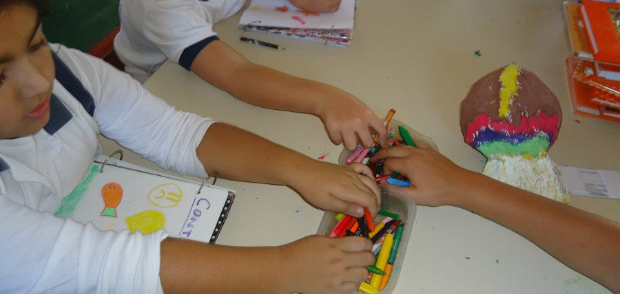
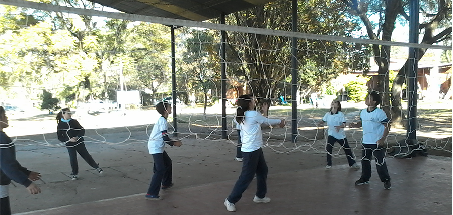
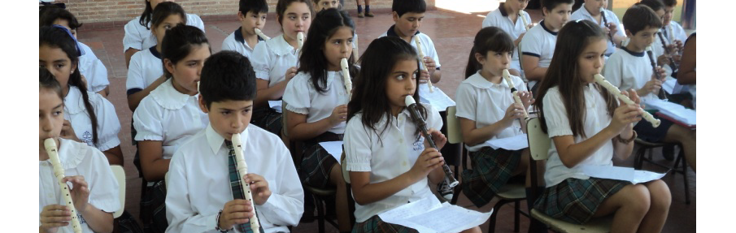

La plastica como lenguaje permite al niño poder expresarse con imágenes visuales, construir significados, comunicar y comunicarse. A través del arte puede visualizarse los procesos interactivos y afectivos que se desarrollan en la creación, así también la psicomotricidad El niño puede lograr a través del arte, el desarrollo de la creatividad, la fantasía, promoviendo la reflexión y el conocimiento de la propia creación.
-Que se ejercite en el uso de la línea, la forma, el color, las texturas y el volumen para producir imágenes legibles que expresen y comuniquen su mundo afectivo y social. -Que construya sus producciones con imágenes de su entorno y, a través del contacto con producciones artísticas de distintos géneros y estilo, amplíe sus referentes. -Que desplace los elementos estereotipados de su producción para reemplazarlos por trabajos mas personalizados. -Que descubran técnicas de trabajo y sus combinaciones.
-Que ejercite la habilidad para la creación personal y en equipo. -Que experimente la confianza, el gusto y la seguridad en sus posibilidades de plantear y resolver problemas, proyectos, actividades. -Que respete a sus pares y a sus superiores. -Que respete y cuide los materiales e instrumentos que utiliza. -Que respete las producciones propias y ajenas. -Que disfrute de la hora de clase y de sus logros.
La materia se desarrolla en el turno tarde en un aula destinada para esta actividad. Tenemos la modalidad de solicitar a los alumnos una lista de materiales al comienzo del año para desarrollar las actividades de todo el año guardando para ser reutilizado lo que no se llego a usar o lo que todavía continúa sirviendo. También hacemos uso de elementos de descarte o en desuso colaborando con el cuidado del medio ambiente. Algunos de los materiales que usamos con mas frecuencia son: crayones, tizas, plasticotas de colores, plasticola blanca, plastilinas, brillantina, goma eva, papel glace, cartulinas, afiches, hilos lanas, algodón, retazos de telas, cintas y temperas aplicando diferentes técnicas o formas de uso. Las clases se desarrollan en el aula y en ocasiones al aire libre, actividad de la que disfrutan mucho los alumnos. Entre las actividades que se dan durante el año cabe mencionar :collage con diferentes elementos por ej.con hojas de árboles en otoño,klexografia,aguadas revelando el dibujo invisible, esgrafiado con crayones y tinta china, esfumado con tizas mojadas, naturalezas muertas con temperas ,perspectiva, diferentes trabajos en grupo o de a pares, pintura con música (suave o pesada ) pintura de paisaje , conocimiento de artistas y su obra ,tarjetas, construcción de juegos, la realización de la bandera de egresados con los chicos de sexto grado, lectura de cuentos o relatos para interpretar y luego crear, dibujo y pintura según la imaginación y según la realidad . En todas las actividades se procura que el alumno disfrute de lo que hace que descubra sus posibilidades y que siempre tenga confianza de que es capaz.
Al tener 3 hs. semanales, pretendemos, a partir de las clases de Educación Física inculcar en los niños y jóvenes la práctica deportiva dentro y fuera de la Institución. Consideramos que la actividad física es el principal factor para tener una mayor calidad de vida desde el punto de vista de la salud, como así también generar los valores que ayudarán a nuestros alumnos a crear y formar una mejor sociedad. Desde el área trabajamos el deporte, la gimnasia, la vida en la naturaleza y el atletismo partiendo siempre desde lo recreativo. Las actividades hasta el momento fueron gimnasia y actualmente voley, trabajando todos los fundamentos técnicos de dichas actividades. Próximamente dictaremos el deporte basquet, como una disciplina nueva dentro de la institución, sabiendo que es poca la practica de este deporte en la ciudad de Yerba Buena. Otra actividad de la materia es el campamentismo, donde el objetivo es que los niños aprendan a cuidar el medio ambiente y también conocer distintos lugares de la provincia: San Pedro, Hualinchay, San Andrés, El Cadillal, Tacana, Colalalo del Valle, Dique Escaba, entre otros. En la Institución se realiza la Fiesta Anual de Educación Física, donde se muestra todo lo trabajado en la materia con los alumnos. También festejamos el día del padre, día de la madre y el mes de la familia: con actividades recreativas y deportivas para todos los integrantes de la Institución. El Colegio cuenta con una escuelita de Fútbol como una actividad extra curricular para alumnos de la institución y para niños de la ciudad de Yerba Buena.
Este proyecto tiene la necesidad de promover en el Colegio, actividades que promuevan que los niños adquieran conocimientos y prácticas que le permitieran desarrollar en el futuro una actividad básica como por ej. la obtención de productos y alimentos hortícolas y trabajarlos en convivencia con la familia. Se propone un modelo educativo donde los chicos puedan mejorar su capacidad motriz, así como tomar conciencia de lo que significa obtener alimentos y su relación directa con la naturaleza. Un modelo productivo, mediante técnicas sencillas y económicas, mínimo requerimiento de insumos, incorporando la idea del respeto al ambiente y los beneficios de proteger la biodiversidad.
En nuestro Colegio se trabaja a la Educación Musical como una disciplina que le permite al niño desarrollar el gusto por cantar, por tocar un instrumento, por moverse, por bailar, expresar a través del cuerpo sus sentimientos, estimulándolo para que pueda expresarse naturalmente y con sentido musical, guiándolo para que él, el protagonista de la clase revalorice a la música como un bien cultural. Trabajamos la voz: enseñando a discriminar los distintos timbres, a desarrollar habilidades vocales y de improvisación y que disfruten del placer de cantar todo aquello que ellos quieran y que como docente uno les enseña. Descubrimos a los instrumentos musicales: sus posibilidades sonoras, la clasificación, sus timbres, los modos y medios para ejecutarlos y la práctica de los mismos, contamos con gran numero de instrumentos de percusión donde los chicos aprenden a tocarlos, atendiendo al ritmo de las diferentes obras prestando atención al acento y a la rítmica de las palabras y melodía, además a partir de 4° año se comienza con el uso del instrumento Flauta Dulce que reúne todo lo trabajado durante los primeros años: rítmica, acento, pulso, notación musical, sonidos, figuras y melodía.
Contamos con un amplio repertorio de canciones: populares, del folclore, latinoamericanas y aprenden todos los himnos y marchas patrias. El objetivo principal es buscar en todos nuestros niños que puedan expresarse libremente, que al cerrar sus ojos descubran el maravilloso mundo de la música, que puedan sentirla y disfrutarla, porque la música no está reservada para unos cuantos sino para aquel que quiera descubrirla.
